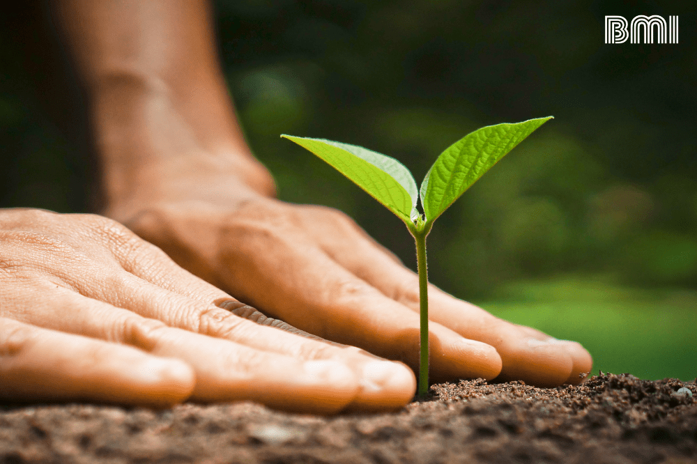

A lo largo de las entradas anteriores hemos visto cómo la Tierra funciona como un gran ecosistema, cómo la energía fluye a través de los organismos, y cómo cada ser vivo cumple un papel fundamental dentro de la naturaleza. Comprender el funcionamiento de los ecosistemas es el primer paso para poder protegerlos.
La relación entre los seres humanos y el ambiente
Los seres humanos dependemos directamente de los ecosistemas para sobrevivir. De ellos obtenemos recursos esenciales como agua, alimentos, oxígeno, materias primas y energía. Además, los ecosistemas regulan el clima, purifican el aire y el agua, y mantienen la fertilidad de los suelos.
Uso sostenible de los recursos naturales
¿Qué es la sustentabilidad?
El concepto de sustentabilidad se refiere al uso responsable de los recursos naturales para satisfacer las necesidades actuales sin comprometer la capacidad de las futuras generaciones de satisfacer las suyas.
Acciones para proteger el medio ambiente
Reducir el consumo
Utilizar solo lo que realmente se necesita
Reutilizar y reciclar
Disminuir residuos y aprovechar recursos
Ahorrar agua y energía
Reducir impacto ambiental
Respetar la naturaleza
Proteger la biodiversidad
La educación ambiental como herramienta de cambio
La educación ambiental es un elemento clave para promover el cuidado del planeta. A través del conocimiento, las personas pueden comprender mejor cómo funcionan los ecosistemas y cuáles son las consecuencias de las acciones humanas. Las escuelas, universidades y medios de comunicación desempeñan un papel importante en la difusión de estos conocimientos.
Construyendo un futuro sostenible
El futuro del planeta depende en gran medida de las decisiones que se tomen en la actualidad. Si las sociedades adoptan modelos de desarrollo sostenibles, será posible preservar los ecosistemas y garantizar la disponibilidad de recursos para las generaciones futuras. Esto implica combinar el progreso económico con la protección del medio ambiente.
Conclusión
Proteger los ecosistemas no es solo una responsabilidad ambiental, sino también una necesidad para asegurar la continuidad de la vida en la Tierra y construir un futuro sostenible para todos.